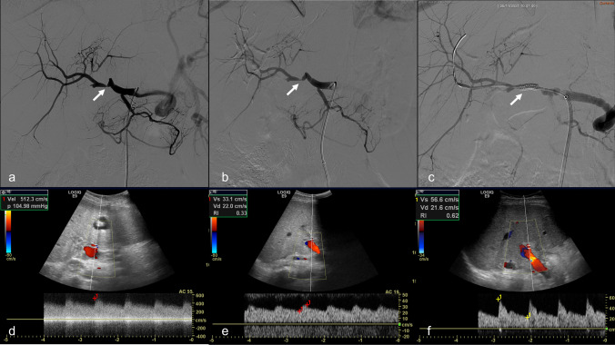
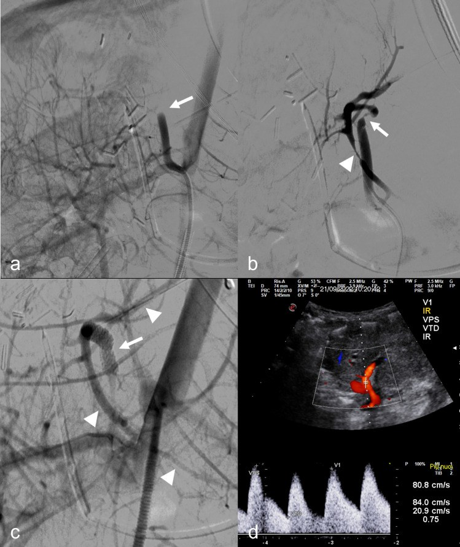
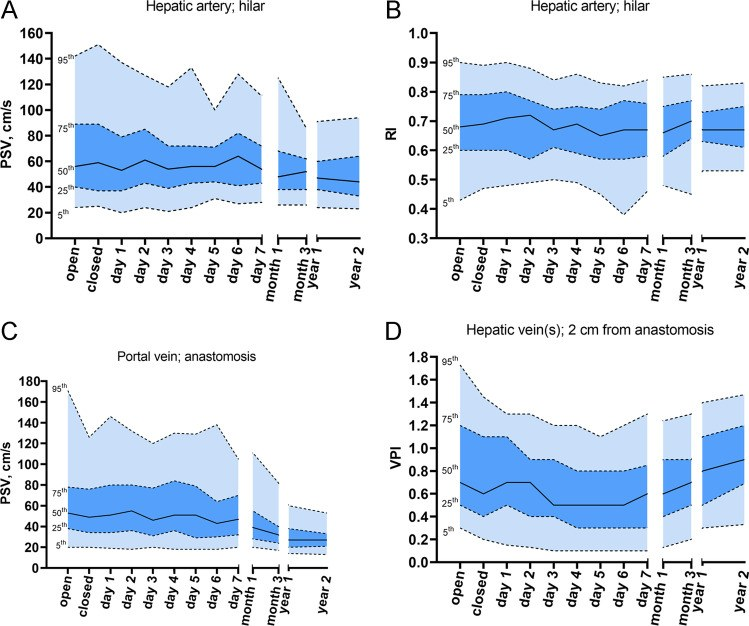
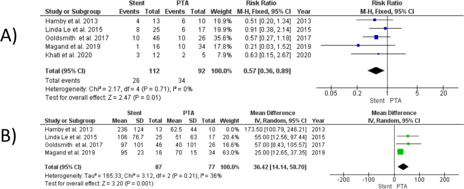

1915 — Hẹp động mạch gan ở TRẺ sau ghép gan: nong bóng lặp lại hay stent "không lớn theo trẻ"? / Hepatic artery stenosis in pediatric liver transplantation: repeat PTA versus a stent that does not grow
Tags: pattern:hep-mach pattern:hep-mieng-noi pattern:tardus-parvus pattern:giam-ri pattern:gia-phinh-dong-mach pattern:hep-tuong-doi vung:gan vung:dong-mach-gan vung:mieng-noi score:RI score:PSV score:SAT protocol:Doppler protocol:CEUS protocol:CTA-3-thi protocol:DSA protocol:nong-bong protocol:stent
Mức chắc chắn (certainty): tổng hợp y văn (literature synthesis) — số liệu chính lấy từ các bài open-access đã đọc toàn văn: Marra et al., Cardiovasc Intervent Radiol 2023 (PMC10616219, CC BY 4.0 — 17 trẻ, 21 thủ thuật, nong bóng và stent); Verhagen et al., Eur Radiol 2023 (PMC10415481, CC BY 4.0 — giá trị tham chiếu Doppler theo thời điểm ở 112 trẻ); Shaaban Abdelgalil et al., CVIR Endovasc 2025 (PMC12501083, CC BY 4.0 — meta PTA vs stent ở người lớn); Stefanowicz et al., Children (Basel) 2023 (PMC9955988, CC BY 4.0 — 400 ca LDLT trẻ, HAT 6,75%). Bổ sung tóm tắt của registry HEPATIC 2026 (11.443 ca ghép gan trẻ; HAS 1,2%) và Li et al. 2025 (327 ca, HAS 4%) — các bài này không open access, chỉ dùng số liệu tóm tắt, ghi rõ nguồn. Phần tính toán "hẹp tương đối" theo tăng trưởng là suy luận (inference) từ định luật Poiseuille, không phải số đo từ nghiên cứu. Bài không có ca nguyên văn riêng của nhóm; ca 1–2 là ca nguyên văn của PMC10616219.
Câu hỏi gốc của bài: bé gái 3 tuổi, 8 tháng sau ghép gan, men gan tăng nhẹ, Doppler PSV tại miệng nối 260 cm/s, RI trong gan 0,42, CTA hẹp 70% tại miệng nối. Nong bóng xong hẹp còn 40% — có nên đặt stent? Và nếu đặt stent 3,5 mm hôm nay, chuyện gì xảy ra khi cháu 10 tuổi, mạch đã lớn gấp đôi? Bài này trả lời khi nào can thiệp, khi nào chỉ theo dõi, và vì sao stent ở trẻ là một quyết định "vay mượn thì tương lai".
1. Tổng quan — vì sao hẹp động mạch gan ở trẻ khác người lớn, và vì sao stent không lớn theo trẻ
A. Bệnh học (pathology) và cơ chế:
- Tần suất thật ở trẻ (registry HEPATIC, 11.443 ca ghép gan trẻ, 32 trung tâm): biến chứng động mạch gan 4,8% — HAT 3,6%, HAS 1,2%; 82,4% biến chứng xảy ra trong tháng đầu, HAT đỉnh trong 2 tuần đầu, còn HAS phân bố rải hơn; giai đoạn 2012–2021 tăng lên 5,3%, chủ yếu do HAS tăng còn HAT ổn định (tóm tắt HEPATIC 2026, PMID 42950133). Đây là con số thấp hơn nhiều so với các loạt cũ (HAS 4–11%, tới 12% ở trẻ; HAT tới 26%) mà Marra trích dẫn — vì vậy không được gộp số giữa các thời kỳ.
- Nhóm nguy cơ cao: trẻ < 1 tuổi có teo đường mật nhận gan toàn bộ, và ghép lại sau một biến chứng động mạch trước đó có tỉ lệ biến chứng cao nhất; ghép gan sống cho có tỉ lệ biến chứng 3,4%, trung tâm thể tích lớn có 3,8% — thấp hơn mặt bằng chung (HEPATIC 2026).
- Vì sao trẻ khác người lớn: động mạch gan của trẻ 1–3 mm, miệng nối làm bằng mũi rời/khâu vi phẫu, mảnh ghép S2/3 nằm sát cơ hoành và dễ gập khi gan tái tưới máu; trẻ tăng trưởng nhanh nên mọi đoạn hẹp cố định sẽ thành hẹp tương đối theo thời gian. Trong loạt 400 ca LDLT trẻ, HAT 6,75%; yếu tố nguy cơ gồm suy gan cấp trước ghép, đường kính miệng nối < 2 mm, và rối loạn dòng chảy động mạch trong mổ (PMC9955988).
- Sinh lý bệnh của hẹp: hẹp làm giảm áp lực tưới máu đoạn xa; giường mạch gan giãn tiểu động mạch để bù → RI giảm < 0,5** và **phổ tardus-parvus** (lên chậm, **SAT > 80 ms). Tại chỗ hẹp, theo phương trình liên tục, vận tốc tăng nghịch với diện tích lòng mạch → PSV > 200 cm/s và aliasing. Đây là vật lý của dòng chảy, không phải "mạch viêm".
- Vì sao hẹp ở trẻ lại nguy hiểm hơn ở người lớn: đường mật chỉ có nguồn động mạch gan; ở trẻ, dự trữ mạch bàng hệ quanh đường mật kém hơn và mảnh ghép còn phải lớn lên. Hẹp kéo dài → ITBL (hẹp đường mật thiếu máu), sỏi/bùn mật, xơ gan mảnh ghép — những tổn thương không hồi phục dù sau đó mở được mạch.
- Vì sao PTA (nong bóng) là bước đầu: bóng chỉ rách vòng xơ/intima, không để lại vật liệu lạ; mạch còn khả năng lớn theo trẻ. Nhưng PTA đơn thuần chỉ thành công 5/21 thủ thuật (24%) trong loạt trẻ của Marra; stent cần cho 9/17 bệnh nhân (53%), 10/21 thủ thuật (48%) vì hẹp còn > 50%, tắc dai dẳng, hoặc miệng nối mới có nguy cơ vỡ.
- Vì sao stent "không lớn theo trẻ": stent là ống kim loại có đường kính cố định (loạt trẻ dùng stent/stent phủ mạch vành, ví dụ 3,5 × 20 mm và 3 × 20 mm; một ca dùng stent ngoại vi 4 × 15 mm; bóng nong 1,5–5 mm) (PMC10616219). Khi trẻ lớn, đường kính mạch tăng nhưng đường kính stent không tăng tương ứng → hẹp tương đối tại hai đầu stent và tăng gradient áp lực. Theo Poiseuille, trở kháng tỉ lệ nghịch với r⁴: nếu mạch tăng từ 3 mm lên 5 mm mà stent vẫn 3 mm, trở kháng của đoạn stent so với đoạn mạch mới là (5/3)⁴ ≈ 7,7 lần — đây là suy luận, không phải số đo lâm sàng.
- Lập luận ngược của nhóm Marra: Marra et al. không lo về stent nhỏ vì (1) thiếu máu không đột ngột → tuần hoàn bàng hệ trong gan phát triển dần, và (2) có thể nong lại stent/post-dilate khi hẹp trong stent. Họ thừa nhận "long-term data will provide us with this relevant information" — tức chưa có bằng chứng dài hạn (PMC10616219). Đây là điểm phản biện trung thực: stent nhỏ không chắc gây hại ngay, nhưng chưa được chứng minh an toàn qua 10–20 năm tăng trưởng.
- Vì sao "không can thiệp" cũng là một lựa chọn: HAS muộn, không triệu chứng, có bàng hệ có thể theo dõi bảo tồn. Loạt 327 ca trẻ: 13 HAS (4%), 3 sớm/10 muộn; sống mảnh ghép 100% ở nhóm sớm và 83% ở nhóm muộn, sống bệnh nhân 100%; một mảnh ghép mất trong nhóm bảo tồn, nhóm can thiệp nội mạch 100% (Li et al. 2025, PMID 39379231). Registry HEPATIC: 41,5% chỉ dùng kháng đông/kháng kết tập tiểu cầu, 41,5% can thiệp nội mạch, không khác biệt sống còn 1 năm; nhưng HAS sớm ≤ 21 ngày có mất mảnh ghép 1 năm 16% vs 1% (PMID 42869696). Vì vậy thời điểm quan trọng hơn kỹ thuật.
B. Ngưỡng định lượng bắt buộc (cửa 1 Argon):
| Đại lượng | Con số đã kiểm chứng | Ý nghĩa thực hành |
|---|---|---|
| Biến chứng động mạch ở trẻ (HEPATIC) | 4,8% (HAT 3,6%, HAS 1,2%); 82,4% trong tháng đầu; HAT đỉnh 2 tuần; 2012–2021 5,3% (PMID 42950133) | HAS hiếm hơn HAT nhưng đang tăng; không gộp với loạt cũ |
| HAS ở trẻ (loạt đơn trung tâm) | 4% (13/327); 3 sớm/10 muộn; sống ghép 100% sớm, 83% muộn; sống bệnh nhân 100% (PMID 39379231) | HAS muộn có thể theo dõi bảo tồn |
| HAT ở LDLT trẻ | 6,75% (27/400); nguy cơ: suy gan cấp, miệng nối < 2 mm, rối loạn dòng trong mổ (PMC9955988) | Kiểm tra đường kính miệng nối và dòng chảy trong mổ |
| Doppler bình thường ở trẻ — PSV động mạch gan | ngày 0: 24–142 cm/s; ngày 1: 20–137; tháng 1: 26–125; tháng 3: 26–86; năm 1: 24–91; năm 2: 23–94 (5th–95th) (PMC10415481) | PSV 150 cm/s là bình thường ở ngày 0 nhưng bất thường ở năm 1 |
| Doppler bình thường ở trẻ — RI | ngày 0: 0,43–0,90; ngày 1: 0,48–0,90; tháng 3: 0,45–0,86; năm 1: 0,53–0,82 (PMC10415481) | RI 0,5 chỉ là bờ dưới; RI 0,6–0,7 là bình thường |
| Tiêu chuẩn hẹp trên Doppler (trẻ) | SAT > 80 ms và/hoặc PSV tại miệng nối > 2 m/s và/hoặc PSV trong gan < 50 cm/s kèm RI < 0,5 (PMC10616219) | Đo đúng miệng nối, góc ≤ 60° |
| Tiêu chuẩn tắc trên Doppler | PSV < 30 cm/s hoặc mất dòng (PMC10616219) | Không nhầm với co thắt |
| Xác nhận hẹp trên CTA | hẹp khu trú ≥ 70% (PMC10616219) | CTA lát ≤ 1 mm, MPR theo trục mạch |
| PTA đơn thuần ở trẻ | 5/21 thủ thuật (24%) thành công (PMC10616219) | Đừng kỳ vọng PTA một lần là xong |
| Cần stent ở trẻ | 9/17 bệnh nhân (53%), 10/21 thủ thuật (48%) (PMC10616219) | Chỉ định: hẹp còn > 50%, tắc dai dẳng, miệng nối mới nguy cơ vỡ, giả phình |
| Thành công kỹ thuật | 16/21 (76%); tiên phát 13/18 (72%), thứ phát 3/3 (100%) (PMC10616219) | Thất bại thường do không qua được chỗ tắc hoặc gập mạch |
| Thành công lâm sàng | 14/17 (82%); thông mạch trung vị 367 ngày (IQR 114,5–500) (PMC10616219) | Theo dõi ≥ 1 năm mới nói "thành công" |
| Biến chứng thủ thuật | 3/17 (18%) nhẹ; 1/17 (6%) tử vong do vỡ động mạch sau nong bóng (PMC10616219) | PTA không phải thủ thuật vô hại |
| Stent ở trẻ — loạt 2006 | 7 trẻ (4 HAS, 3 HAT); 3 vỡ mạch khi PTA phải đặt stent phủ ngày 1/5/17; 2 stent thông, 1 tắc sau 3 tháng; theo dõi 9–40 tháng (Boyvat 2006, PMID 17175359) | Stent cứu được vỡ mạch, nhưng tắc stent có thật |
| PTA vs stent (meta người lớn) | 9 nghiên cứu/325 ca (PTA 140, stent 197): không khác độ thông 6/12 tháng/cuối theo dõi, thành công kỹ thuật, biến chứng nặng, bóc tách, vỡ mạch, HAT; stent giảm can thiệp lại RR 0,57 (0,36–0,89), tái hẹp muộn hơn +36,42 tháng (14,14–58,70) (PMC12501083) | Stent giảm số lần can thiệp, không tăng độ thông |
| HAS sớm vs muộn (HEPATIC) | ≤ 21 ngày: mất ghép 1 năm 16% vs 1%; 5% tiến triển HAT; sống ghép 1 năm 93%, sống bệnh nhân 96% (PMID 42869696) | HAS sớm = can thiệp sớm; HAS muộn có thể bảo tồn |
| Aspirin sau can thiệp (phác đồ Bergamo) | 5 mg/kg/ngày (tối đa 100 mg), 6 tháng sau ghép, tiếp tục vô thời hạn sau tái thông (PMC10616219) | Không tự ngừng trước thủ thuật |
| Kháng đông sau can thiệp | LMWH tới 2 tuần sau thủ thuật (PMC10616219) | Cân nhắc nguy cơ chảy máu |
C. TẠI SAO ảnh trông như vậy (vật lý hình ảnh):
- DSA: cản quang trong lòng mạch → hẹp = cột thuốc hẹp lại, tắc = cột thuốc cụt; không thấy nhánh xa = tắc/co thắt. Trên trẻ, động mạch 1–3 mm nên phải dùng catheter 4–5 F, dây 0,014–0,018 inch, bơm thì chọn lọc để không bỏ sót gập (kink) ở miệng nối.
- Doppler: tín hiệu tỉ lệ vận tốc, không phải "lượng máu". PSV tăng tại chỗ hẹp do tiết diện giảm; RI giảm đoạn xa do giãn tiểu động mạch; SAT kéo dài vì sóng áp lực đến chậm. Vì RI là tỉ lệ, nó không phụ thuộc cung lượng tim, nhưng phụ thuộc vị trí lấy mẫu — luôn lấy trong gan, không lấy ngay miệng nối.
- CEUS: vi bọt thuần lòng mạch → thấy tưới máu thật, phân biệt hẹp thật với co thắt (co thắt hết sau vài phút/thuốc giãn), và đánh giá nhánh xa khi Doppler không kết luận.
- CTA: đầu dò ≤ 1 mm, MPR/MIP/VR; động mạch nhỏ và cong nên lát dày 3–5 mm sẽ bỏ sót hẹp. Hẹp ≥ 70% mới được coi là nguyên nhân (PMC10616219), nhưng hẹp 50–70% vẫn có thể có ý nghĩa nếu men gan tăng và RI thấp.
- Stent trên DSA: stent không cản quang hoàn toàn — thấy hai marker đầu/cuối và thay đổi dòng chảy; sau đặt, không thấy hẹp còn lại và nhánh xa hiện đủ mới gọi là thành công kỹ thuật.
- Siêu âm sau stent: stent gây tăng âm mạnh và che sau (blooming) → PSV trong stent có thể giả tăng; phải đo đoạn trước và sau stent, so RI trong gan, và không chẩn đoán hẹp trong stent chỉ bằng một điểm PSV.
2. Mẫu hình + chẩn đoán phân biệt theo vị trí (Gamut)
Xếp theo cái gì đang chặn dòng và có cần can thiệp không:
- Mẫu A — hẹp khu trú tại miệng nối, SỚM (≤ 21 ngày): men gan tăng, PSV > 200 cm/s, RI < 0,5; CTA hẹp ≥ 70%. Nguy cơ mất mảnh ghép 16% → can thiệp sớm (PTA trước, stent nếu thất bại).
- Mẫu B — hẹp miệng nối MUỘN, có bàng hệ: trẻ không triệu chứng, men gan gần bình thường, RI không thấp, CTA hẹp nhưng nhánh xa còn đủ. Có thể theo dõi bảo tồn + kháng đông (Li 2025; HEPATIC).
- Mẫu C — hẹp dài/khúc khuỷu (kink) trước miệng nối: PTA dễ thất bại vì gập cơ học, không phải xơ; stent có thể mở thẳng góc gập nhưng dễ gãy stent nếu gập liên tục → cân nhắc mổ sửa.
- Mẫu D — co thắt động mạch (vasospasm): xảy ra sau chọc mạch/bơm thuốc, hết sau vài phút hoặc sau thuốc giãn; không đặt stent.
- Mẫu E — giả phình tại miệng nối: stent phủ (stent graft) để giữ mạch và bịt túi, thay vì nút mạch (nút sẽ làm mất tưới máu gan) (PMC10616219).
- Mẫu F — huyết khối (HAT): mất dòng, PSV < 30 cm/s, water-hammer; xử trí lấy huyết khối cơ học/stent-retriever hoặc mổ tái thông — không phải bài này (xem 1913).
- Mẫu G — hẹp trong stent/hẹp tương đối theo tăng trưởng: trẻ lớn nhanh, stent cố định; PSV tăng dần, RI giảm, men gan tăng; nong lại trong stent hoặc phẫu thuật.
- Mẫu H — chèn ép từ ngoài (tụ dịch, mảnh ghép phù): Doppler giảm dòng, CTA không có hẹp lòng mạch; xử trí dẫn lưu/giảm phù, không stent.
- Mẫu I — tăng áp lực ổ bụng/suy tim: dòng giảm toàn bộ, RI tăng, không hẹp khu trú; xử trí nguyên nhân hệ thống.
3. Bảng so sánh phân biệt (ma trận đối chiếu)
| Thực thể (entity) | Hình ảnh điển hình (US/CT/DSA) | Chốt vào (rule-in) | Chốt loại (rule-out) | Gợi ý xác nhận |
|---|---|---|---|---|
| Hẹp miệng nối sớm (≤ 21 ngày) | PSV > 200 cm/s tại miệng nối, RI < 0,5**, **SAT > 80 ms; CTA hẹp ≥ 70%; DSA thấy cột thuốc hẹp | Hẹp ≥ 70% + men gan tăng + mất ghép 1 năm 16% | PSV bình thường theo tuổi + RI 0,6–0,7 + không hẹp trên CTA | DSA + đo áp nếu cần; can thiệp sớm |
| Hẹp miệng nối muộn có bàng hệ | Hẹp trên CTA nhưng nhánh xa còn, RI không thấp, men gan gần bình thường | Hẹp + bàng hệ + không triệu chứng | RI < 0,5 + men gan tăng + nhánh xa kém → không được bảo tồn | Theo dõi 3–6 tháng; chụp lại khi triệu chứng |
| Co thắt mạch | Dòng giảm thoáng qua, hết sau thuốc giãn/thời gian; không hẹp cố định | Hết co thắt khi lặp DSA/CEUS | Hẹp cố định trên CTA/DSA | CEUS/DSA lặp; không stent |
| Khúc khuỷu/gập mạch | Góc gập > 90°, hẹp không đối xứng, thay đổi theo thì; PTA không cải thiện | Hẹp do gập + PTA thất bại | Hẹp xơ cố định, bờ nhẵn | DSA 2 thì; mổ sửa hoặc stent |
| Giả phình miệng nối | Túi cản quang ngoài lòng mạch, không có lớp áo; có thể vỡ | Túi giả + nguy cơ vỡ/chảy máu | Không có túi, chỉ hẹp | DSA + stent phủ; không nút mạch |
| HAT (huyết khối) | Mất dòng, PSV < 30 cm/s, water-hammer; CTA khuyết thuốc | Không có dòng + khuyết thuốc | Có dòng trong gan + phổ bình thường | DSA; lấy huyết khối (bài 1913) |
| Hẹp trong stent/tương đối | Stent cố định, PSV tăng dần, RI giảm, men gan tăng; CTA hẹp trong stent | PSV tăng > 200 cm/s + RI < 0,5 + hẹp trong stent | Stent thông, PSV ổn định, RI bình thường | Nong lại/post-dilate; theo dõi tăng trưởng |
| Chèn ép từ ngoài | Dòng giảm, không hẹp lòng mạch trên CTA; có tụ dịch/mảnh ghép phù | Hồi phục sau dẫn lưu/giảm phù | Hẹp cố định trong lòng mạch | Siêu âm + CTA; dẫn lưu |
| Tăng áp lực ổ bụng/suy tim | Dòng giảm toàn bộ, RI tăng, không hẹp khu trú | Bệnh cảnh hệ thống + RI tăng | Hẹp khu trú + RI thấp | Đo áp lực ổ bụng, siêu âm tim |

Bé trai 14 tuổi, 30 ngày sau ghép gan lại toàn bộ: (a) DSA chọn lọc cho thấy hẹp miệng nối kèm gập trước miệng nối; (b) sau nong bóng 3 mm, hẹp vẫn còn; (c) sau stent ngoại vi Herculink 4 × 15 mm, mạch thẳng và nhánh trong gan hiện đủ; (d–e) Doppler trước thủ thuật: vận tốc tại miệng nối tăng, RI trong gan 0,33; (f) sau thủ thuật, phổ về bình thường. Đây là ca cho thấy PTA một lần có thể không đủ và stent dùng để xử lý gập + hẹp còn lại, không phải "stent cho mọi hẹp". Nguồn: Marra et al., Cardiovasc Intervent Radiol 2023;46(11):1610–1620, PMC10616219 Fig. 3, CC BY 4.0.4. Protocol chụp + ngưỡng xử trí
A. Theo dõi Doppler (phác đồ của trung tâm có 20 năm ghép gan trẻ):
- Ngày 0–14: mỗi ngày; tuần 1–4: mỗi tuần; sau đó mỗi 6–12 tháng (PMC10616219). Thêm Doppler đột xuất khi men gan tăng, vàng da, sốt, giảm nước tiểu.
- Đo và ghi đủ: PSV và RI tại đoạn sau miệng nối trong gan (không lấy ngay miệng nối), PSV tĩnh mạch cửa tại miệng nối, VPI tĩnh mạch gan, nhu mô (ổ dịch, vùng giảm âm).
- Luôn so với giá trị theo thời điểm (PMC10415481): PSV 150 cm/s là bình thường ở ngày 0 nhưng cao bất thường ở năm 1; RI 0,5 là bờ dưới, không phải "ngưỡng tuyệt đối" cho mọi tuổi.
B. Khi Doppler bất thường — thứ tự:
- Lặp Doppler + CEUS: phân biệt co thắt với hẹp thật; xem nhánh xa và thời gian ngấm.
- CTA 3 thì, lát ≤ 1 mm, MPR/MIP/VR: xác nhận hẹp khu trú ≥ 70%, gập, giả phình, huyết khối; đọc cả tĩnh mạch cửa và tĩnh mạch gan.
- DSA + đo áp lực khi CTA không kết luận hoặc trước can thiệp: đo gradient trước–sau hẹp; gradient ≥ 5 mmHg hoặc hẹp ≥ 70% là chỉ định can thiệp (ngưỡng áp dụng theo nguyên lý, số cụ thể của trẻ chưa có trong nguồn — ghi rõ "chưa rõ").
- Siêu âm tim/đo áp lực ổ bụng khi dòng giảm toàn bộ, để loại trừ nguyên nhân hệ thống.
C. Ngưỡng xử trí:
| Tình huống | Hành động |
|---|---|
| HAS sớm ≤ 21 ngày, hẹp ≥ 70%, men gan tăng | PTA trước; nếu còn > 50% hoặc gập → stent; không trì hoãn (mất ghép 16%) |
| HAS muộn, không triệu chứng, nhánh xa đủ, RI bình thường | Theo dõi + kháng đông/kháng kết tập tiểu cầu; chụp lại 3–6 tháng |
| Hẹp + giả phình | Stent phủ để giữ mạch; không nút mạch |
| Co thắt | Không can thiệp; lặp CEUS/DSA sau giãn |
| Gập > 90° không đáp ứng PTA | Mổ sửa hoặc stent nếu giải phẫu cho phép |
| Hẹp trong stent do tăng trưởng | Nong lại/post-dilate; nếu stent đã đạt đường kính tối đa → mổ bắc cầu |
| Trẻ < 1 tuổi, động mạch < 2 mm | Hạn chế stent tối đa; ưu tiên PTA lặp lại, vì stent nhỏ sẽ hẹp tương đối khi trẻ lớn |
| Sau can thiệp | Aspirin 5 mg/kg/ngày (tối đa 100 mg) theo phác đồ; LMWH 2 tuần; Doppler 1 ngày, 1 tuần, 1–3–6–12 tháng |
D. Sơ đồ quyết định:
flowchart TD
A[Tre sau ghep gan: men gan tang hoac Doppler bat thuong] --> B{PSV mieng noi > 200 cm/s va hoac tardus parvus}
B -->|Khong| C[Theo doi theo lich va tim nguyen nhan khac]
B -->|Co| D{CTA lat 1 mm: hep >= 70 phan tram}
D -->|Khong| E[CEUS va Doppler lai: co that hay gia]
D -->|Co| F{Thoi diem <= 21 ngay}
F -->|Som| G[Can thiep som: PTA truoc]
F -->|Muon| H{Co trieu chung hoac men gan tang}
H -->|Khong| I[Theo doi bao ton + khang dong]
H -->|Co| J[PTA truoc]
G --> K{Con hep > 50 phan tram hoac gap}
J --> K
K -->|Khong| L[Theo doi 1 3 6 12 thang]
K -->|Co| M[Stent hoac mo sua]
M --> N{Tre con tang truong}
N -->|Co| O[Stent duong kinh hien tai + ke hoach nong lai]
N -->|Khong| P[Stent theo kich thuoc nguoi lon]
5. Biến thể bình thường và cạm bẫy
A. Biến thể bình thường (normal variant):
- PSV rất cao trong 24–48 giờ đầu do tăng cung lượng và phù mảnh ghép; giảm dần theo tuần (PMC10415481). Không gọi là hẹp nếu RI bình thường và nhánh xa đủ.
- RI > 0,8 trong 3 ngày đầu ở ~50% trẻ (phù mảnh ghép), bình thường hóa ~ngày 4 — không can thiệp chỉ vì RI cao sớm.
- Động mạch gan nhỏ, cong ở trẻ S2/3 → PSV có thể lên 140–150 cm/s mà không hẹp; luôn so với giá trị nền của chính bệnh nhi và đoạn đối diện.
- Tĩnh mạch cửa giãn nhẹ sau ghép do thay đổi giải phẫu, không phải tắc.
- Dịch quanh gan ít, tự hết sau mổ — không phải chèn ép.
B. Cạm bẫy (pitfall):
- Dùng ngưỡng người lớn cho trẻ: PSV > 200 cm/s và RI < 0,5 là ngưỡng hẹp, nhưng PSV bình thường ở trẻ ngày 0 đã tới 142 cm/s; nếu chỉ nhìn một con số, sẽ overcall hoặc bỏ sót tùy thời điểm.
- Đặt stent cho "hẹp" do co thắt: co thắt hết sau giãn; stent sẽ cố định một đoạn mạch không bệnh và gây hẹp tương đối sau này.
- Đặt stent cho gập cơ học: stent mở thẳng nhưng gãy nếu gập liên tục; mổ sửa có thể tốt hơn.
- Quên rằng stent không lớn: trẻ tăng trưởng → hẹp tương đối; cần kế hoạch nong lại ngay từ đầu, và theo dõi đến khi trưởng thành.
- PTA "nhẹ tay" cho miệng nối mới: nguy cơ vỡ mạch (3/7 ca trong loạt Boyvat; 1 tử vong trong loạt Marra) — dùng bóng nhỏ hơn đường kính, bơm chậm, có stent phủ sẵn sàng.
- Bỏ sót hẹp muộn vì "men gan bình thường": HAS muộn có thể im lặng nhờ bàng hệ; nếu không chụp, sẽ chỉ phát hiện khi ITBL/xơ gan.
- Nong bóng xong là kết thúc: tái hẹp sau PTA là thường gặp; lịch Doppler 1–3–6–12 tháng là bắt buộc.
- Satisfaction of search: thấy hẹp rồi không đọc tĩnh mạch cửa/tĩnh mạch gan; biến chứng mạch sau ghép thường đi thành cụm.
6. Tự lượng giá — Blind Quiz
Ca 1 — Bé trai 14 tuổi, 30 ngày sau ghép gan lại, men gan tăng; Doppler thấy vận tốc tại miệng nối tăng, RI trong gan 0,33.
- Hỏi: (1) mô tả hai bất thường trên DSA; (2) vì sao nong bóng 3 mm chưa đủ? (3) sau stent, dấu hiệu nào chứng minh thành công?
Bấm để hiện đáp án (findings + chẩn đoán)
- (1) Hẹp tại miệng nối + gập (kinking) trước miệng nối; RI trong gan 0,33 phù hợp tardus-parvus do hẹp.
- (2) Nong bóng 3 mm chỉ xử lý được vòng xơ, không sửa gập; sau nong hẹp vẫn còn (ảnh b).
- (3) Stent ngoại vi Herculink 4 × 15 mm làm mạch thẳng, nhánh trong gan hiện đủ, và phổ Doppler về bình thường (ảnh c, f).
- Nguồn: Marra et al., Cardiovasc Intervent Radiol 2023, PMC10616219 Fig. 3, CC BY 4.0.
Ca 2 — Bé gái 7 tháng tuổi, 4 ngày sau ghép gan split, mất dòng động mạch gan; DSA thấy tắc kèm gập và hẹp miệng nối.

- Hỏi: (1) vì sao chọn stent phủ thay vì nong bóng đơn thuần? (2) loại stent và kích thước? (3) theo dõi gì sau đặt?
Bấm để hiện đáp án
- (1) Miệng nối mới 4 ngày, nguy cơ vỡ khi nong; stent phủ vừa mở lòng vừa bọc chỗ nguy cơ.
- (2) Stent mạch vành phủ PK Papyrus 3,5 × 20 mm; sau đó mạch và các nhánh trong gan hiện đủ.
- (3) Doppler ngày 1, tuần 1, tháng 1–3–6–12, tìm hẹp trong stent/tương đối khi trẻ lớn; aspirin theo phác đồ; không bỏ theo dõi vì stent "đã thông".
- Nguồn: Marra et al., Cardiovasc Intervent Radiol 2023, PMC10616219 Fig. 2, CC BY 4.0.
Ca 3 — Cùng một giá trị PSV 150 cm/s: bình thường hay bất thường?

- Hỏi: (1) đọc khoảng 5th–95th của PSV động mạch gan ở ngày 0 và năm 1; (2) vì sao không thể dùng một ngưỡng cho mọi thời điểm? (3) RI thay đổi thế nào?
Bấm để hiện đáp án
- (1) Ngày 0: 24–142 cm/s; năm 1: 24–91 cm/s (PMC10415481).
- (2) PSV giảm dần khi mảnh ghép hết phù và cung lượng ổn định; 150 cm/s ở ngày 0 là trong khoảng bình thường, nhưng ở năm 1 là trên 95th → phải so theo thời điểm.
- (3) RI ngày 0: 0,43–0,90; năm 1: 0,53–0,82 — RI ổn định hơn PSV nhưng vẫn thay đổi theo loại mảnh ghép (S2/3, S2/3/4, toàn bộ).
- Nguồn: Verhagen et al., Eur Radiol 2023;33(9):6404–6413, PMC10415481 Fig. 4, CC BY 4.0.
Ca 4 — Stent có làm mạch thông lâu hơn không?

- Hỏi: (1) đọc kết quả can thiệp lại; (2) đọc thời gian tới tái hẹp; (3) áp dụng vào trẻ như thế nào?
Bấm để hiện đáp án
- (1) Stent giảm can thiệp lại: RR 0,57 (0,36–0,89), p = 0,01.
- (2) Stent kéo dài thời gian tới tái hẹp: +36,42 tháng (14,14–58,70), p = 0,001.
- (3) Ở người lớn, stent giảm số lần thủ thuật nhưng không tăng độ thông; ở trẻ, lợi ích này phải cân với stent cố định không lớn theo trẻ → PTA lặp lại vẫn là lựa chọn đầu tay, stent để cứu tình huống thất bại/gập/giả phình.
- Nguồn: Shaaban Abdelgalil et al., CVIR Endovasc 2025;8:78, PMC12501083 Fig. 3, CC BY 4.0.
Bài liên quan chéo
- 1913 – Hẹp & huyết khối động mạch gan sau ghép gan — bộ ba Dodd, water-hammer, kỹ thuật can thiệp ở người lớn; đọc trước bài này.
- 1914 – Suy chức năng mảnh ghép sớm (EAD) & PNF — khi men gan tăng mà mạch–mật đã loại trừ.
- 1906 – Hẹp dòng ra tĩnh mạch gan sau ghép (HVOO) — ứ huyết làm giảm dòng động mạch, dễ nhầm hẹp.
- 1909 – Hẹp–tắc tĩnh mạch cửa sau ghép gan — biến chứng mạch đi kèm trong cùng mảnh ghép.
- 133 – Hẹp miệng nối & cholangiopathy thiếu máu sau ghép gan — hậu quả muộn của hẹp động mạch không được điều trị.
- 1916 – Thải ghép cấp tế bào (ACR) sau ghép gan — nguyên nhân nhu mô khi mạch–mật đã loại trừ.
Ảnh
- 4 ảnh, tải từ PMC CDN của bài open access, không chỉnh sửa pixel; nguồn + giấy phép từng file trong
images/CREDITS.md. - Tên file:
1915_<nội dung>_<Modality>_PMCxxxxx-fN.jpg; không tạo ảnh ghép (các ảnh khác bệnh nhân/khác modality, không cùng chuỗi xung để đối chiếu). - Ảnh không tải: Radiopaedia (chỉ dẫn link), AuntMinnie (chỉ dẫn link), các bài không rõ giấy phép — xem
sources.md.
Không dùng để chẩn đoán độc lập khi chưa có người hướng dẫn.